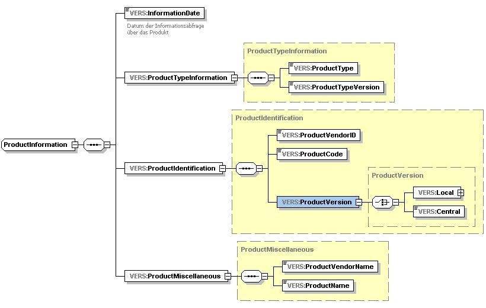
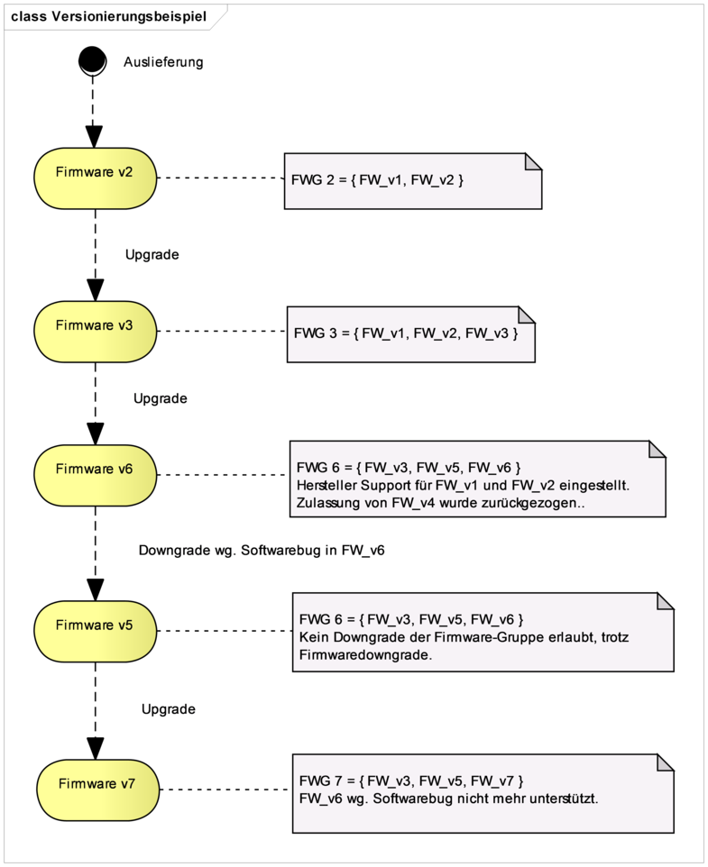
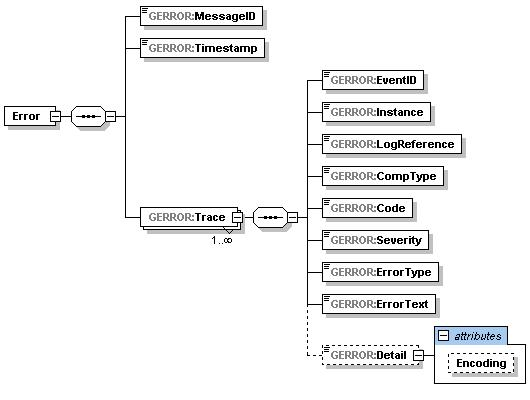
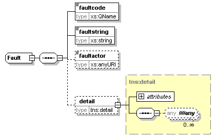
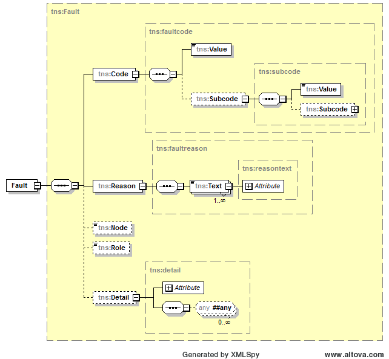

Elektronische Gesundheitskarte und Telematikinfrastruktur
Übergreifende Spezifikation
Operations und Maintenance
| Version | 1.14.1 |
| Revision | 571837 |
| Stand | 16.12.2022 |
| Status | freigegeben |
| Klassifizierung | öffentlich |
| Referenzierung | gemSpec_OM |
Änderungen zur Vorversion
Anpassungen des vorliegenden Dokumentes im Vergleich zur Vorversion können Sie der nachfolgenden Tabelle entnehmen.
Dokumentenhistorie
| Version |
Stand |
Kap./ Seite |
Grund der Änderung, besondere Hinweise |
Bearbeitung |
|---|---|---|---|---|
| 0.5.0 |
03.07.12 |
zur Abstimmung freigegeben |
gematik |
|
| 0.6.0 |
07.09.12 |
Einarbeitung der Kommentare |
gematik |
|
| 1.0.0 |
15.10.12 |
Anpassungen und Ergänzungen |
gematik |
|
| 1.1.0 |
12.11.12 |
Einarbeitung Kommentare aus übergreifender Konsistenzprüfung |
gematik |
|
| 1.2.0 |
06.06.13 |
Einarbeitung Kommentare LA |
gematik |
|
| 1.2.1 |
13.12.13 |
Versionierung der Karten ergänzt |
gematik |
|
| 1.4.0 |
21.02.14 |
Losübergreifende Synchronisation |
gematik |
|
| 1.5.0 |
17.06.14 |
Anpassung Schemadateien (gemäß P11-Änderungsliste) |
gematik |
|
| 1.6.0 |
17.07.15 |
Einarbeitung CR KOM-LE in ORS1 |
gematik |
|
| 1.7.0 |
24.08.16 |
Anpassungen zum Online-Produktivbetrieb (Stufe 1) |
gematik |
|
| 1.8.0 |
06.02.17 |
Einarbeitung nach Änderungsliste |
gematik |
|
| 1.9.0 |
14.05.18 |
Anpassungen auf Grundlage von P15.2 und P15.4 |
gematik |
|
| 1.10.0 |
26.10.18 |
Anpassungen auf Grundlage von P15.9 |
gematik |
|
| 1.11.0 |
18.12.18 |
ePA-Inhalte ergänzt |
gematik |
|
| 1.12.0 | 15.05.19 | Anpassungen auf Grundlage von P18.1 |
gematik |
|
| 1.13.0 | 02.03.20 | Anpassungen auf Grundlage von P21.1 |
gematik |
|
| 1.14.0 | 26.06.20 | Anpassungen auf Grundlage von P21.3 | gematik | |
| 1.14.1 | 16.12.22 | Anpassungen auf Grundlage CI_Maintenance_22.6 | gematik |
vorliegende übergreifende Spezifikation definiert Anforderungen für die Themenbereiche Versionierung, Fehlerbehandlung und Logging, die bei der Realisierung (bzw. dem Betrieb) von Produkttypen der TI zu beachten sind. Diese Anforderungen sind als übergreifende Regelungen relevant für Interoperabilität und Verfahrenssicherheit.
Dabei kann es sich um Festlegungen handeln, die direkt von Herstellern bzw. Anbietern von Produkten zu beachten sind, oder um Festlegungen, die im Rahmen von produkttypspezifischen Spezifikationen weiter detailliert werden.
Versionierung (Kap. 2)
Aus Gründen der Nachvollziehbarkeit müssen alle Artefakte im Umfeld der Telematikinfrastruktur nach definierten Vorgaben versioniert werden. Weiterhin ist die Auskunftspflicht zu Versionsnummern einzuhalten. Die Versionsnummern von Produkten und Schnittstellen dienen auch als Grundlage für die Definitionen und Auswertung von Kompatibilitäten zwischen Produkttypen.
Fehlerbehandlung (Kap. 3)
Fehlerzustände können an verschiedenster Stelle innerhalb der TI im Wirkbetrieb auftreten und haben i.d.R. Einfluss auf die Verfügbarkeit von Anwendungsfällen der Fachanwendungen und der TI-Plattform. Eine definierte und strukturierte Fehlerbehandlung ist zwingend nötig, um übergreifend aufgetretene Fehlerzustände zu beschreiben, weiterzuleiten, zu verarbeiten und anzuzeigen.
Logging (Kap. 4)
Jede Komponente im Wirkbetrieb ist angehalten, festgelegte Ereignisse zu protokollieren („Logging“) und daher nachvollziehbar zu halten. Im Gegensatz zur Fehlerbehandlung sollen hier auch Rückschlüsse auf den Normalfall ermöglicht werden, ohne dass eine Fehlermeldung ausgelöst werden muss (beispielsweise im PerformanceLog).
Das Dokument richtet sich an Hersteller und Anbieter von Produkten der TI.
Dieses Dokument enthält normative Festlegungen zur Telematikinfrastruktur des deutschen Gesundheitswesens. Der Gültigkeitszeitraum der vorliegenden Version und deren Anwendung in Zulassungsverfahren werden durch die gematik in gesonderten Dokumenten (z. B. Dokumentenlandkarte, Produkttypsteckbrief, Leistungsbeschreibung) festgelegt und bekannt gegeben.
Schutzrechts-/Patentrechtshinweis:
Die nachfolgende Spezifikation ist von der gematik allein unter technischen Gesichtspunkten erstellt worden. Im Einzelfall kann nicht ausgeschlossen werden, dass die Implementierung der Spezifikation in technische Schutzrechte Dritter eingreift. Es ist allein Sache des Anbieters oder Herstellers, durch geeignete Maßnahmen dafür Sorge zu tragen, dass von ihm aufgrund der Spezifikation angebotene Produkte und/oder Leistungen nicht gegen Schutzrechte Dritter verstoßen und sich ggf. die erforderlichen Erlaubnisse/Lizenzen von den betroffenen Schutzrechtsinhabern einzuholen. Die gematik GmbH übernimmt insofern keinerlei Gewährleistungen.
Festlegungen zum Themenbereich Migration sind nicht Bestandteil des vorliegenden Dokumentes.
Anforderungen als Ausdruck normativer Festlegungen werden durch eine eindeutige ID in eckigen Klammern sowie die dem RFC 2119 [RFC2119] entsprechenden, in Großbuchstaben geschriebenen deutschen Schlüsselwörter MUSS, DARF NICHT, SOLL, SOLL NICHT, KANN gekennzeichnet.
Sie werden im Dokument wie folgt dargestellt:
<AFO-ID> - <Titel der Afo>
Text / Beschreibung
[<=]
Dabei umfasst die Anforderung sämtliche zwischen Afo-ID und der Textmarke [<=] angeführten Inhalte.
Folgende Artefakte werden in der TI versioniert:
GS-A_3695
Versionsnummern der TI MÜSSEN folgenden grundlegenden Aufbau haben:
Hauptversionsnummer.Nebenversionsnummer.Revisionsnummer<Trenner>Suffix
Die Bestandteile „Trenner“ und Suffix sind optional. Details hierzu werden pro Artefakttyp (vgl. 2.1.1) festgelegt.
Die kleinste Versionsnummer ist 0.0.1<Trenner>0. Die Bestandteile der Nummerierung sind numerisch.
<=
GS-A_3696
Neue Versionsnummern für zu versionierende Artefakte der TI MÜSSEN mindestens dann erzeugt werden, wenn die Artefakte zur Nutzung freigegeben werden, unabhängig vom Grund ihrer Erstellung im Entwicklungsprozess.
<=Z. B. können für Testzwecke Versionsnummern vergeben werden, die aufgrund von Korrekturen nie im Wirkbetrieb sichtbar werden. Die Nummerierung eines Artefakts ist damit nicht zwangsweise in jedem Kontext (z. B. im Wirkbetrieb) lückenlos.
Sowohl signifikante Änderungen (wie Hinzufügen oder Entfernen einer Funktionalität), als auch moderate Änderungen (wie die Modifikation einer bereits bestehenden Funktionalität) ziehen eine Änderung der Versionsnummer nach sich.
GS-A_3697
Bei der Erhöhung von Versionsnummern MUSS nach folgenden Regeln verfahren werden:
Die Hauptversionsnummer eines Artefakts MUSS sich erhöhen, falls daran signifikante Änderungen durchgeführt werden.
Die Nebenversionsnummer MUSS sich erhöhen, falls moderate Änderungen durchgeführt werden.
Die Revisionsnummer MUSS sich erhöhen, falls Änderungen notwendig werden, die das Artefakt bezüglich seiner Außensicht nicht beeinflussen.
Das optionale Suffix MUSS sich erhöhen, falls Änderungen notwendig werden, die das Artefakt bezüglich seiner Außensicht nicht beeinflussen und nicht bereits durch die Revisionsnummer abgebildet wurden.
Bei einer Erhöhung eines Versionsnummernteils (Haupt-, Neben-, Revisionsnummer) MÜSSEN alle rechts davon angegebenen Versionsnummernanteile auf null gesetzt werden.
Die Bedeutung der einzelnen Teile der Versionsnummer für die einzelnen Artefakte ist im Rahmen dieses Dokuments in den folgenden Kapiteln näher erläutert und dient als Hilfestellung zur Interpretation der vorgenommenen Änderungen.
Die Konzepte und Spezifikationen der gematik definieren final die Menge der Produkttypen der TI sowie ihre Umsetzungsgrundlage. Die Produkttypen werden durch die gematik entsprechend [GS-A_3695] versioniert (Produkttypversion) und entsprechend [GS-A_3696] fortgeschrieben.
Die Bedeutung der Versionsnummern bei der Fortschreibung folgt der grundlegenden Festlegung aus [GS-A_3697] mit folgender Konkretisierung:
Dabei werden die ersten drei Versionsnummernteile (Haupt-, Neben- und Revisionsnummer) als kompatibilitätsrelevante Anteile der Produkttypversion (kPTV) verstanden, die für die zu jedem Dokumentenrelease veröffentlichte technische Migrationsstrategie maßgeblich sind. Alle vier Versionsnummernteile definieren die Produkttypversion (PTV).
Obwohl die kompatibilitätsrelevante Produkttypversion für eine Kompatibilitätsbetrachtung in der TI verwendet wird, sollen Produkttypen die kompatibilitätsrelevante Produkttypversion anderer Produkttypen technisch nicht für Kompatibilitätsprüfungen heranziehen, da über die kompatibilitätsrelevante Produkttypversion keine Selektion einzelner Schnittstellenversionen erfolgt. Stattdessen sollen für Kompatibilitätsprüfung auf Schnittstellenebene die vorhandenen Versionen von Schnittstellen und Datenstrukturen verwendet werden.
Sofern in anderen technischen Spezifikationen bzw. Artefakten der Begriff Produkttypversion benutzt wird, ist immer die kompatibilitätsrelevante Produkttypversion gemeint. Weiterhin ist die von einem Produkt im Rahmen der Selbstauskunft gemeldete Produkttypversion auf deren kompatibilitätsrelevanten Teil (kPTV) beschränkt.
GS-A_4541
Produkte der TI DÜRFEN im Rahmen von Kompatibilitätsprüfungen die Produkttypversion anderer genutzter Produkte technisch NICHT heranziehen, sofern dies nicht ausdrücklich durch die gematik in konkreten Einzelfällen festgelegt wird.
<=
Als Beispiel sei das eHealth-Kartenterminal genannt, welches eine versionierte Schnittstelle zum Konnektor besitzt, dem Konnektor aber auch die kompatibilitätsrelevante Produkttypversion meldet. Der Konnektor muss die Schnittstellenversion für Kompatibilitätsprüfungen verwenden. Der Konnektor darf die kompatibilitätsrelevante Produkttypversion des eHealth-Kartenterminals hierfür nicht verwenden, da sich diese aufgrund von signifikanten Änderungen außerhalb der Schnittstelle zum Konnektor ändern kann (HW-Änderungen oder Schnittstellen zu anderen Produkttypen).
Die folgenden Vorgaben beziehen sich auf alle Produkte, d.h. konkrete, technische Realisierungen von Produkttypen, die die von der gematik spezifizierten Funktionalitäten eines Produkttypen implementieren und dem Release-, Änderungs- und Konfigurationsmanagement der gematik unterliegen.
Bei der Identifikation von Produkten werden einheitlich für alle Produkte folgende drei Kategorien von Attributen betrachtet:
Die von der gematik spezifizierte Grundlage eines Produkttyps wird als Spezifikationsgrundlage für Produkte bezeichnet und ist durch den Produkttyp und die Produkttypversion (alle vier Stellen) eindeutig festgelegt.
GS-A_4542
Alle Produkte der TI MÜSSEN auf einer durch die gematik definierten Spezifikationsgrundlage (Produkttyp und Produkttypversion) basieren.
<=Die eindeutige Versionierung von Produkten in der TI findet durch die Produktidentifikation statt, die eine Erweiterung der allgemeinen Versionsnummer aus Kapitel 2.1.2 darstellt.
GS-A_3700
Alle Produkte der TI, die auf einem dezentralen Produkttyp der TI-Plattform beruhen, MÜSSEN eine eindeutige Produktidentifikation entsprechend den Vorgaben in Tab_ProdIdentD besitzen.
<=GS-A_5025
Alle Produkte der TI, die auf zentralen Produkttypen der TI-Plattform oder einem fachspezifischen Dienst beruhen, MÜSSEN eine eindeutige Produktidentifikation entsprechend den Vorgaben in Tab_ProdIdentZ besitzen.
Das Produktkürzel der Produktidentifikation MUSS für alle Umgebungen (RU/TU/PU) gleich sein und dem Zulassungsantrag entsprechen.
<=
Personalisierte Karten stellen einen Zusammenschluss unterschiedlicher Zulassungsobjekte dar. Die einzelnen Zulassungsobjekte können durch unterschiedliche Hersteller erzeugt und verantwortet werden. Da für den Betrieb der TI die Kenntnis aller Teile einer Karte relevant sein kann, werden alle Teilelemente einzeln versioniert.
GS-A_5026
Alle personalisierten Karten und kartenbasierte Sicherheitsmodule der TI (eGK, HBA, SMC-B, gSMC-K, gSMC-KT) MÜSSEN folgende eindeutige Produktidentifikationen entsprechend den Vorgaben in Tab_ProdIdentZ (ohne Patchlevel) besitzen.
Ein Software-Modul der TI ist ein Produkttyp, der rein durch Software realisiert wird und die Nutzung einer Fachanwendung in der dezentralen Umgebung des Anwenders ermöglicht. Er führt die dezentrale Fachlogik der Fachanwendung auf dem Gerät/System des Anwenders aus. Wenn ein Software-Modul mit anderer Software kombiniert wird, gelten die gematik-Vorgaben nur für die - durch die gematik spezifizierte - Fachlogik der Fachanwendung.
A_17235
Alle Software-Module der TI, die zur Nutzung auf eigenen Geräten der Versicherten, Kostenträger oder Leistungserbringer bereitgestellt werden, MÜSSEN eine eindeutige Produktidentifikation entsprechend den Vorgaben in Tab_ProdIdentZ besitzen.
Für die Versionierung dieser Software-Module MUSS beachtet werden:
Tabelle 1: Tab_ProdIdentD – Produktidentifikation auf Basis von dezentralen Produkttypen der TI-Plattform ohne Karten
| Attribut zur Produktidentifikation |
zuständig Inhalt |
Struktur |
|---|---|---|
| Hersteller-/Anbieter-ID |
gematik |
String[5] (1) (2) |
| Produktkürzel |
Hersteller/Anbieter |
String[8](1) (2) |
| Produktversion |
Hersteller/Anbieter |
String[23] (1) (2) Darstellungsform: „<Firmwareversion>:<Hardwareversion>“ |
| Für die Produktversion gilt: |
||
| Firmwareversion |
Hersteller/Anbieter |
String[11] (1)(2)(3) Darstellungsform: X1.Y1.Z1 gemäß [GS-A_3695] |
| Hardwareversion |
Hersteller/Anbieter |
String[11] (1)(2)(3) Darstellungsform: X2.Y2.Z2 gemäß [GS-A_3695] |
| (1) Als Zeichensatzkodierung für Felder der Produktidentifikation MUSS UTF-8 verwendet werden und es MÜSSEN Zeichen mit einer UTF-8-Kodierung in einem Byte (äquivalent zu ASCII) verwendet werden. (2) Die angegebene Länge bezeichnet die maximale Länge der Zeichenkette. (3) Die Verwendung eines Suffixes entsprechend [GS-A_3695] ist nicht erlaubt. |
||
Hierbei ist zu beachten, dass der Firmware-Anteil (kurz FW-Anteil) in der Produktspezifikation immer den gesamten Software-Anteil eines Produktes identifiziert. Es darf keine weiteren Software-Bestandteile (z. B. Bootloader) geben, die außerhalb der FW-Version durch einen Anbieter angepasst werden.
Tabelle 2: Tab_ProdIdentZ – Produktidentifikation auf Basis von zentralen Produkttypen der TI-Plattform, fachanwendungsspezifischen Diensten, Software-Modulen und Karten
| Attribut zur Produktidentifikation |
zuständig Inhalt |
Struktur |
|---|---|---|
| Hersteller-/Anbieter-ID |
gematik |
String[5] (1) (2) |
| Produktkürzel |
Hersteller/Anbieter |
String[8](1) (2) |
| Produktversion |
Hersteller/Anbieter |
String[12] (1) (2) Darstellungsform: X.Y.Z[-P] entsprechend [GS-A_3695] mit einem zusätzlichen und optionalen numerischen Suffix (hier Patchlevel: „P“) für Produkte auf Basis von zentralen Produkttypen der TI-Plattform, fachanwendungsspezifischen Diensten, Software-Modulen und Karten, wobei hier X, Y, Z jeweils im Range (0 – 99) und P im Range (0- 255) zu wählen sind. |
| (1) Als Zeichensatzkodierung für Felder der Produktidentifikation MUSS UTF-8 verwendet werden und es MÜSSEN Zeichen mit einer UTF-8-Kodierung in einem Byte (äquivalent zu ASCII) verwendet werden. (2) Die angegebene Länge bezeichnet die maximale Länge der Zeichenkette. Da es aber für das (optionale) Patchlevel kein adäquates Datum auf der Karte gibt, ist die komplette Darstellung der Versionsangabe nur außerhalb der Karte möglich. |
||
Als Darstellungsform der Spezifikationsgrundlage und Produktidentifikation, z. B. an Benutzerschnittstellen, kann folgende Form genutzt werden:
Herstellern bzw. Anbietern von Produkten stehen die in Tab_ZusAttr genannten zusätzlichen Produktattribute zur Verfügung. Der Produktname stellt den vollständigen Namen des Produkts dar. Es wird eine Kopplung des Produktkürzels an den Produktnamen empfohlen. Diese Kopplung soll durch eine Namensähnlichkeit, aber nicht zwingend durch eine technische Umsetzung gegeben sein.
GS-A_5054
Alle Produkte der TI, die auf Produkttypen beruhen, KÖNNEN zusätzlich zu ihrer eindeutigen Produktidentifikation sowohl Herstellernamen, als auch den Produktnamen als Klartext, entsprechend den Vorgaben in Tab_ZusAttr, besitzen.
<=Tabelle 3: Tab_ZusAttr – Zusätzliche Produktattribute
| Zusätzliche Produktattribute |
zuständig Inhalt |
Struktur |
|---|---|---|
| Herstellername /Anbietername |
Hersteller/Anbieter |
String |
| Produktname |
Hersteller/Anbieter |
String |
Zusammenfassend führt Abbildung 1 anhand des Schemas [ProductInformation.xsd] alle für die Selbstauskunft relevanten (sowohl normativen und auch optionalen) Bestanteile der Produktinformation auf, wie sie bereits durch die Anforderungen GS-A_4975, GS-A_5025 und GS-A_5026 erfasst wurden. Hierbei ist folgende Zuordnung von Bezeichnern zu beachten:

Abbildung 1: Darstellung des Schemas [ProductInformation.xsd] zur Beschreibung der Produktinformation
Zur Produktversion als Bestandteil der Produktidentifikation, welche inhaltlich durch den Hersteller vergeben wird, ist folgendes zu beachten:
GS-A_5038
Hersteller bzw. Anbieter von Produkten MÜSSEN folgende Festlegungen bei der Vergabe einer Produktversion berücksichtigen:
Jede Produktänderung MUSS durch eine Änderung an den Produktversionsanteilen Hauptversionsnummer, Nebenversionsnummer, Revisionsnummer bzw., wenn vorhanden, Patchlevel(Suffix) gekennzeichnet werden.
Jede Produktänderung MUSS eine höhere Produktversion aufweisen, als die zugrundeliegende Vorgängerversion.
Wenn ein von der Stelligkeit höherer Versionsanteil geändert wird, MÜSSEN die Versionsanteile mit niedrigerer Stelligkeit auf „0“ gesetzt werden.
Für die Versionsanteile MÜSSEN ausschließlich Dezimalzahlen verwendet werden. Führende Nullen in einzelnen Anteilen DÜRFEN NICHT bei der Anzeige in einer textuellen Darstellungsform verwendet werden.
GS-A_5039
Hersteller bzw. Anbieter von Produkten MÜSSEN folgende Festlegungen bei der Vergabe einer Produktversion bei Produktänderungen berücksichtigen, falls sich die zugrundeliegende Produkttypversion durch die gematik ändert:
Die Hauptversionsnummer MUSS geändert werden, wenn für den Produkttyp durch die gematik ein geänderter (eventuell erweiterter) Funktionsumfang gefordert wird.
Ansonsten MUSS die Nebenversionsnummer geändert werden.
GS-A_5040
Hersteller bzw. Anbieter von Produkten KÖNNEN folgende Festlegungen bei der Vergabe einer Produktversion bei Produktänderungen berücksichtigen, falls die zugrundeliegende Produkttypversion durch die gematik unverändert bleibt oder die Produktänderung neben Änderungen aufgrund einer neuen Produkttypversion weitere Anteile enthält:
Die Hauptversionsnummer KANN geändert werden, wenn die Produktänderung größere Features oder Feature-Änderungen enthält.
Die Nebenversionsnummer KANN geändert werden, wenn die Produktänderung kleinere Features oder Feature-Änderungen enthält.
Die Revisionsnummer KANN geändert werden, wenn die Produktänderung Fehlerkorrekturen oder Regeländerung (z. B. OS-, Middleware-Patch) enthält.
Ein für zentrale Produkte der TI-Plattform optional vorhandener Patchlevel KANN geändert werden, wenn die Produktänderung unterhalb der Revisionsnummer erfolgt.
Um während des Entwicklungsprozesses und des Betriebs der TI feststellen zu können, welche Versionen von Produkten für die einzelnen Produktinstanzen aktuell eingesetzt werden, muss es möglich sein, den Versionsstand des Produkts für alle Produktinstanzen zu ermitteln.
Für eine Versionierung einzelner Produktinstanzen kann es spezifische weitere Mechanismen und Attribute geben (z. B. Seriennummer), die nicht Gegenstand dieser Spezifikation sind.
GS-A_3702
Alle Produkte der TI (mit Ausnahme der Karten) MÜSSEN eine Selbstauskunft mit folgenden Inhalten besitzen:
Die Selbstauskunft MUSS die vollständige Produktidentifikation (siehe [GS-A_3700] bzw. [GS-A_5025]) beinhalten.
Die Selbstauskunft MUSS den Produkttyp und die kompatibilitätsrelevante Produkttypversion beinhalten.
Sofern der Produkttyp eine Systemuhr besitzt, MUSS die Selbstauskunft das Abfragedatum (einschl. Uhrzeit) beinhalten.
Die Selbstauskunft KANN weitere Versionsinformationen für Komponenten enthalten, aus denen sich das Produkt zusammensetzt (z. B. Betriebssystem, Datenbanksystem, Patches, Service Packs). Hierbei KANN die Anordnung der Knoten gemäß ihrer Abhängigkeits- bzw. Teilerelation (d. h. in Baumdarstellung) erfolgen.
GS-A_5140
Alle Karten der TI MÜSSEN eine Selbstauskunft mit folgenden Inhalten besitzen:
Die Selbstauskunft MUSS die vollständige Produktidentifikation (siehe [GS-A_5026]) beinhalten.
Die Selbstauskunft MUSS den Produkttyp und die kompatibilitätsrelevante Produkttypversion für die Zulassungsobjekte COS, Objektsystem (inkl. Kartenkörper) und Personalisierung beinhalten.
GS-A_4543
Alle zentralen Produkte der TI-Plattform und fachanwendungsspezifischen Dienste MÜSSEN folgende Festlegungen bei der Rückgabe der Selbstauskunft berücksichtigen:
Die Rückgabe der Selbstauskunft SOLL über eine technische Schnittstelle erfolgen.
Sofern der Produkttyp eine Systemuhr besitzt, MUSS die Selbstauskunft das Abfragedatum (einschl. Uhrzeit) beinhalten.
Falls eine technische Schnittstelle zur Rückgabe verwendet wird, MUSS die Rückgabe mittels des XML-Formats [ProductInformation.xsd] erfolgen.
Falls keine technische Schnittstelle zu Einsatz kommt, MUSS die Rückgabe der Selbstauskunft auf Anfrage des Gesamtbetriebsverantwortlichen der TI (GBV TI) organisatorisch erfolgen.
GS-A_4544
Alle dezentralen Produkte der TI-Plattform (ohne Karten) MÜSSEN folgende Festlegungen bei der Rückgabe der Selbstauskunft berücksichtigen:
Die Rückgabe der Selbstauskunft MUSS über die Administrationsschnittstelle mittels Benutzerschnittstelle (z. B. GUI) möglich sein.
Zusätzlich KANN die Rückgabe auf Dateibasis über die Administrationsschnittstelle erfolgen. Hierbei muss das XML-Format [ProductInformation.xsd] verwendet werden.
A_17237
Alle Software-Module der TI, die zur Nutzung auf eigenen Geräten der Versicherten oder Leistungserbringer bereitgestellt werden, MÜSSEN die Rückgabe der Selbstauskunft über die Benutzerschnittstelle (z. B. GUI) ermöglichen.
<=
A_17792
Für alle Software-Module der TI, die zur Nutzung auf eigenen Geräten der Versicherten oder Leistungserbringer bereitgestellt werden, KANN die Rückgabe der Selbstauskunft (zusätzlich zur Benutzerschnittstelle) auf Dateibasis erfolgen.
<=
GS-A_4545
Anbieter zentraler Produkte der TI-Plattform oder einem fachspezifischen Dienst MÜSSEN die Produktidentifikation, den Produkttyp und die kompatibilitätsrelevante Produkttypversion in allen Meldungen für ihre Produktinstanzen an die Störungsampel übermitteln.
<=Die Störungsampel verwaltet nur zentrale, aber keine dezentralen Produkttypen.
GS-A_4546
Die Störungsampel MUSS im Rahmen der Anzeige von Informationen zu einzelnen Produktinstanzen auch die durch die Produktinstanzen gemeldeten Anteile der Kurzform der Selbstauskunft (Produkttyp, kompatibilitätsrelevante Produkttypversion, Produktidentifikation) anzeigen bzw. zugänglich machen.
<=GS-A_4975
Produkttypen der TI-Plattform KÖNNEN eine erweiterte Selbstauskunft technisch ermöglichen, die aus Interoperabilitätsgründen produktspezifische Besonderheiten berücksichtigt
<=Dieser Abschnitt beschreibt die Behandlung von Firmware-Gruppen durch die dezentralen Komponenten der TI-Plattform: Konnektor, Kartenterminal und mobiles Kartenterminal. Weitere Komponenten können Firmware-Gruppen nutzen.
GS-A_4865
Hersteller von Komponenten, die Firmware-Gruppen nutzen, MÜSSEN in jede Firmware eine Firmware-Gruppe als versionierte Liste zulässiger Firmware-Versionen integrieren, zwischen denen ein Wechsel erlaubt ist.
<=
GS-A_4866
Hersteller von Komponenten, die Firmware-Gruppen nutzen, MÜSSEN die Firmware-Versionsinformationen kryptographisch, integritäts- und authentizitätsschützen, z. B. durch eine Einbeziehung in die Codesignatur des Firmware-Images.
<=
GS-A_4867
Die Komponenten, die Firmware-Gruppen nutzen, MÜSSEN das Update auf eine Firmware-Version, die eine Firmware-Gruppe mit höherer Versionsnummer enthält als die der aktuell vorliegenden Firmware-Gruppe, im Rahmen des hier beschriebenen Update-Prozesses ohne weitere Einschränkungen manuell wie auch automatisiert ermöglichen, was immer dazu führt, dass die neue Firmware-Gruppe übernommen werden MUSS. Dies gilt selbst dann, wenn der Update-Vorgang nach erfolgreicher Prüfung der Integrität des Update-Pakets abgebrochen wird.
<=
GS-A_4868
Hersteller von Komponenten, die Firmware-Gruppen nutzen, MÜSSEN die Firmware-Gruppe mit aufsteigenden Nummern versionieren.
<=
GS-A_4869
Hersteller von Komponenten, die Firmware-Gruppen nutzen, MÜSSEN in eine Firmware-Gruppe mindestens die Firmware-Version aufnehmen, mit der die Firmware-Gruppe verteilt wird. Für den Sonderfall, dass eine Firmware-Gruppe nur eine einzige Firmware-Version enthält, ist ein Downgrade unzulässig.
<=
GS-A_4870
Komponenten, die Firmware-Gruppen nutzen, MÜSSEN den Wechsel zu jeder in der aktuellen Firmware-Gruppe enthaltenen Firmware-Version ermöglichen. Ein solcher Wechsel ist somit auch auf zugelassene Vorversionen der aktuellen Firmware möglich.
<=
GS-A_4871
Ein Update zu einer Firmware, deren Version nicht in der aktuellen Firmware-Gruppe enthalten ist, MUSS von Komponenten, die Firmware-Gruppen nutzen, unterbunden werden, soweit die zu installierende Firmware keine Firmware-Gruppe enthält, deren Firmware-Gruppenversion größer ist, als die der aktuell vorliegenden Firmware-Gruppe.
<=
GS-A_4872
Komponenten, die Firmware-Gruppen nutzen, DÜRFEN einen Wechsel auf eine Vorversion der vorliegenden Firmware-Gruppe NICHT ermöglichen.
<=
GS-A_4873
Komponenten, die Firmware-Gruppen nutzen, MÜSSEN den Inhalt der Firmware-Gruppe unabhängig vom Firmware-Image integritätsgesichert persistent speichern.
<=
GS-A_4874
Komponenten, die Firmware-Gruppen nutzen, DÜRFEN den Austausch des Inhalts der Firmware-Gruppe NICHT über andere Wege als ihren Update-Mechanismus ermöglichen. Das Update darf zusammen mit einem Update der Firmware erfolgen. Das Update darf auch ohne Update der Firmware erfolgen.
<=
In Abbildung 2 ist exemplarisch ein möglicher Ablauf erlaubter Wechsel von Firmware-Versionen und Firmware-Gruppen dargestellt, um das Firmware-Gruppenkonzept zu veranschaulichen.

Abbildung 2: Beispiel für Aktualisierungszyklen und Firmware-Gruppenwechsel
Die Definition und Verwaltung von Firmware-Gruppen sowie die Zuordnung von Firmware-Versionen zu Firmware-Gruppen liegt im Verantwortlichkeitsbereich des Herstellers der Komponente. Der Hersteller hat dabei sicherzustellen, dass die durch ihn definierten Firmware-Gruppen die folgenden Anforderungen erfüllen:
GS-A_4875
Bei der Veröffentlichung neuer Firmware-Gruppen DÜRFEN Hersteller von Komponenten, die Firmware-Gruppen nutzen, alte Firmware-Versionen, bei denen Sicherheitsmängel bekannt sind oder die die Zulassung der gematik verloren haben, NICHT in neue Firmware-Gruppen aufnehmen.
<=
GS-A_4876
Hersteller von Komponenten, die Firmware-Gruppen nutzen, DÜRFEN Firmware-Versionen NICHT in neue Firmware-Gruppen aufnehmen, wenn die SigG-Bestätigung der zugehörigen SAK der Komponente zurückgenommen wurde oder wenn die Firmware-Version das CC-Sicherheitszertifikat verliert.
<=
GS-A_4877
Hersteller von Komponenten, die Firmware-Gruppen nutzen, KÖNNEN die in einer Firmware-Gruppe enthaltenen Firmware-Versionen nach eigenem Ermessen einschränken.
<=
GS-A_4878
Hersteller von Komponenten, die Firmware-Gruppen nutzen, KÖNNEN in eine neue Firmware-Gruppe alle durch die gematik zugelassenen Firmware-Versionen aufnehmen, die vom ihm noch aktiv unterstützt werden. Eine weitergehende Einschränkung der enthaltenen Firmware-Versionen durch den Hersteller KANN ebenso erfolgen.
<=
Die Behandlung von Firmware-Gruppen im Konfigurationsdienst wird in der Spezifikation des Konfigurationsdienstes [gemSpec_KSR] beschrieben.
In diesem Kapitel werden Vorgaben zur Versionierung der Karten der TI, also für die Produkttypen eGK, HBA, SMC-B, gSMC-KT und gSMC-K, getroffen. Weiterhin ergeben sich Vorgaben für Produkttypen die auf die Karten der TI zugreifen und dazu die Versionsinformationen der Karten auswerten müssen.
GS-A_4559
Alle Karten der TI MÜSSEN eine oder mehrere Dateien besitzen, die eine getrennte Versionierung des Chips, des Kartenbetriebssystems, der Dateistruktur des Objektsystems, des Kartenkörpers sowie (optional) der Personalisierung ermöglicht.
Die drei Versionsnummern MÜSSEN hierbei den Vorgaben aus [GS-A_3695] genügen.
<=Auf den Karten der TI, speziell auf der eGK (z. B. in der Datei DF.HCA - Health Care Applications), können innerhalb einzelner Dateien komplexe Datenstrukturen abgebildet werden. Falls diese Datenstrukturen durch Schreiboperationen auf die Karte (einschl. CMS) im Wirkbetrieb änderbar sind, muss eine zusätzliche Versionierung der einzelnen Datenstrukturen erfolgen und innerhalb der entsprechenden Datei abgelegt werden.
GS-A_4560
Alle Karten der TI MÜSSEN, sofern sie in ihren Dateien in Bezug auf die Datenstruktur veränderliche Inhalte ablegen, für diese Datenstrukturen eine zusätzliche Versionierung vorsehen.
Die Versionsinformation MUSS hierbei entweder Bestandteil der Datei sein oder in getrennten Versionsinformationsdateien vorgehalten werden und den Vorgaben aus [GS-A_3695] genügen.
<=Adressiert wird hier als Umsetzungsanforderung eine getrennte Versionierung u. a. fachlicher Datenstrukturen auf der eGK. Beispielsweise soll die Version der Datei EF.eNotfalldaten auf der eGK über das Element Version in der Datei EF.StatusNotfalldaten erfasst werden. Dazu sind fachdienstspezifisch weitere Festlegungen getroffen im Dokument „Speicherstrukturen der eGK für die TI-Plattform“ [gemSpec_eGK_Fach_TIP]
GS-A_3701
Da sich die Gültigkeitszeiträume der Kartenversionen von eGK, SMC_B und HBA überschneiden können, MÜSSEN zugreifende Produkttypen (Konnektoren etc.) in der Lage sein, verschiedene Versionsstände zu verarbeiten.
<=Der Begriff „Gültigkeitszeiträume“ bezieht sich hier auf die Nutzungszeiträume von Karten in bestimmten Versionen.
Nach DIN EN ISO 9000:2005 ist ein Fehler gleichzusetzen mit der „Nichterfüllung einer festgelegten Forderung“ [DIN EN ISO 9000]. Das bedeutet, ein Fehler bezeichnet die Abweichung von einem erwarteten Zustand oder Prozess.
Für aufgetretene und erkannte Fehler müssen in Rahmen der Fehlerbehandlung Fehlermeldungen an aufrufenden Produkttypen bzw. an den Systemgrenzen der TI auch an Systeme außerhalb der TI (z. B. Clientsysteme) gemeldet werden.
Dieses Kapitel definiert übergreifende Vorgaben zur Fehlerbehandlung innerhalb der TI sowie an der Grenze zu Clientsystemen für folgende zwei Themenbereiche:
Lokale Fehlerbehandlung bezeichnet die Aktivitäten, die durch die den Fehler auslösende Produktinstanz auszuführen sind. Im übergeordneten Sinne kann anstelle eines Fehlerfalls auch von einem Ausnahmefall die Rede sein, wenn beispielsweise eine beabsichtigte und bekannte Abweichung vom erwarteten Zustand eintritt (bspw. im Testfall oder in der Migration).
Wenn es sich um einen echten Fehlerfall (d. h. unerwartete und unbeabsichtigte Abweichung) handelt, so soll die Ursache so weit und so konkret wie möglich in die Fehlermeldung selbst aufgenommen werden. Ist die Ursache nicht sofort erkenntlich, so soll eine generische Fehlermeldung gewählt werden, die das Problem so hinreichend wie möglich benennt. Konkrete Vorgaben hierzu legen die nachfolgenden Anforderungen fest. Wenn es sich dagegen um einen Ausnahmefall handelt, so soll in dessen Vorbereitung auch eine passende Ursachenbezeichnung festgelegt werden.
Alle Fehlermeldungen sollten grundsätzlich maschinell verarbeitbar sein. Daher ist die Struktur der gematik-Fehlermeldung fest vorgegeben (siehe Abbildung 3). Eine Ausnahme ist in dieser Struktur das Feld „Details“ (welches fehlerabhängige Zusatzinformationen transportiert). Dieses Feld ist nicht dafür vorgesehen, eine automatisierte Auswertung zu ermöglichen. Da die Verarbeitung der Fehler sehr stark von der Plattform und der Implementierung abhängig ist, erfolgen in diesem Kapitel lediglich allgemeingültige Vorgaben, die in den nachfolgenden Spezifikationen kontextabhängig differenziert werden.
Eine ausgegebene Fehlermeldung sollte natürlich für den Anwender direkt verständlich sein. Wer aber dieser Anwender ist (bspw. Administrator oder medizinische Fachkraft) und was in seiner Situation die Kriterien für Verständlichkeit sind, muss jeweils in den nachfolgenden Spezifikationen festgelegt werden.
GS-A_3785
Alle Produkttypen der TI MÜSSEN folgende allgemeine Vorgaben zur lokalen Fehlerbehandlung berücksichtigen:
Fehler, die während der lokalen Verarbeitung auftreten, MÜSSEN erkannt, verarbeitet und im Rahmen einer Fehlermeldung an den aufrufenden Produkttyp gemeldet werden.
Für Fehler, die eine für den Anwender sichtbare Auswirkung haben, MÜSSEN folgende Vorgaben berücksichtigt werden:
Bei direkter Meldung an den Anwender MUSS die Fehlermeldung für den Anwender direkt verständlich sein und es SOLL die Ursache bzw. die Bezeichnung für den Ausnahmefall ersichtlich sein.
Bei Meldung der Fehlermeldung an verarbeitende Systeme, MUSS die Fehlermeldung geeignet dafür sein, dass das verarbeitende System eine Fehlermeldung erzeugen kann, die für den Anwender verständlich ist, und bei der die Ursache bzw. die Bezeichnung für den Ausnahmefall ersichtlich ist.
Auch in dem Fall, dass eine Komponente in der Lage ist, einen Fehler selbst zu beheben, muss dieser Zwischenfall als „Warning“ weitergegeben werden, da durch die Fehlerbehebung Seiteneffekte auftreten könnten, die nicht die Komponente selbst, aber ihr Umfeld beeinflussen.
Remote-Fehlerbehandlung bezeichnet die Aktivitäten, die durch eine Fehler weiterleitende Produktinstanz auszuführen sind.
GS-A_3794
Alle Produkttypen der TI MÜSSEN bei der Verarbeitung von (durch sie empfangenen) Fehlermeldungen folgende allgemeine Vorgaben berücksichtigen:
Empfangene Fehlermeldungen KÖNNEN als Remote-Fehler protokolliert werden.
Durch empfangene Fehlermeldungen resultierende Folgefehler KÖNNEN an die Fehlermeldung angefügt werden.
Für weitergeleitete bzw. bearbeitete Fehlermeldungen, die eine für den Anwender sichtbare Auswirkung haben, MÜSSEN folgende Vorgaben berücksichtigt werden:
Bei direkter Meldung an den Anwender MUSS die weitergeleitete bzw. bearbeitete Fehlermeldung für den Anwender direkt verständlich sein und es MUSS die Ursache bzw. die Bezeichnung für den Ausnahmefall ersichtlich sein.
Bei Meldung der weitergeleiteten bzw. bearbeiteten Fehlermeldung an verarbeitende Systeme, MUSS die Fehlermeldung geeignet dafür sein, dass das weiter verarbeitende System eine Fehlermeldung erzeugen kann, die für den Anwender verständlich ist, und bei der die Ursache bzw. die Bezeichnung für den Ausnahmefall ersichtlich ist.
GS-A_3856-02
Alle Produkttypen der TI, die Webservices nutzen und keine abweichenden Vorgaben von der gematik für diesen Webservice haben, MÜSSEN bei Struktur und Inhalt von Fehlermeldungen folgende Vorgaben berücksichtigen:

Abbildung 3: Abb_XML_Struktur_Fehler XML-Struktur der gematik Fehlermeldung [TelematikError.xsd], Version 2.0
Tabelle 4: Tab_Attribute_Fehler-01 – Attribute der gematik-Fehlermeldung
| Datenelement |
Definition |
Optional |
Beschreibung |
Wertebereich |
|---|---|---|---|---|
| MessageID |
UUID |
Nein |
UUID der Nachricht, durch die der Fehler ausgelöst wurde, bzw. leer falls keine triggernde Nachricht existiert. |
Dynamisch, bestimmt durch die MessageID der triggernden Nachricht, bzw. leer |
| Timestamp |
datetime |
Nein |
Zeitstempel des auftretenden Fehlers. Als Zeitzone SOLL UTC verwendet werden. Das Format entspricht der Definition in [XML Datatypes] |
Zeit |
| EventID |
String (Maximale Länge 100) |
Nein |
Die EventID ist das Identifikations- merkmal eines Fehlers. Das Format und der Inhalt der ID können durch den Hersteller Anbieter bzw. frei vergeben werden. Die Kombination aus EventID und LogReference MUSS innerhalb der Domäne einer Instanz eine eindeutige Referenzierung des Fehlers erlauben. Das bedeutet, dass die Kombination aus EventID, LogReference und Instance eine telematikweit eindeutige Referenzierung eines Fehlers erlaubt. |
Instanzabhängig, keine syntaktischen Vorgaben |
| Instance |
String (Maximale Länge 100) |
Nein |
Eindeutiges Identitätsmerkmal der Instanz, die das Fehlermanagement angestoßen hat und in deren Logging/Tracing weitere Details über den Fehler zu finden sind. Das Identitätsmerkmal wird der Instanz bei Akkreditierung durch die gematik mitgeteilt und muss dementsprechend innerhalb der fehlererzeugenden Komponenten konfigurierbar sein. Für den Konnektor ist dieses Element immer auf „Konnektor-Lokal“ zu setzen, da hier keine Kontextinformation nötig ist. |
Die Instance ID wird durch die gematik vergeben und ist eindeutig. |
| LogReference |
String (Maximale Länge 100) |
Nein |
Die LogReference ist ein verpflichtendes Merkmal, das die Lokalisierung des verwendeten FehlerLogs innerhalb der Instanz eines Anbieters ermöglicht. Die Granularität der verwendeten FehlerLogs kann durch den Anbieters gewählt werden. Die Verwendung des zu verwendenden FehlerLogs für eine Instanz MUSS konfigurierbar sein. Der Konnektor liefert hier einen leeren String an die Primärsysteme. |
Definiert durch Betreiber der Instanz |
| CompType |
String |
Nein |
Das Element CompType enthält den Produkttyp. Die maschinelle Verarbeitung eines Fehlers soll immer die Kombination aus CompType und Code verwenden, um einen spezielle Art von Fehler zu erkennen. |
Definiert durch gematik |
| Code |
Positive Integer 1- 65.535 |
Nein |
Das Element Code wird als Integer hinterlegt und enthält den Fehlercode. Die nähere Definition der Fehlercodes. Die maschinelle Verarbeitung eines Fehlers MUSS immer die Kombination aus CompType und Code verwenden, um einen spezielle Art von Fehler zu erkennen. |
Definiert durch gematik |
| ErrorText |
String (Maximal Länge 250) |
Nein |
Beschreibt den Fehler in deutscher Sprache. Dient vor allem dazu, einen Standardtext pro Fehler vorhalten zu können. |
Definiert durch gematik |
| ErrorType |
String |
Nein |
Das Element ErrorType enthält den Typ eines Fehlers. Dies dient zur Gruppierung der Codes, übergreifend für Komponenten und Fachanwendungen. Die Gruppierung erfolgt bezüglich technischer, fachlicher oder die Sicherheitsaspekte betreffende Fehler. |
Definiert durch gematik |
| Severity |
String |
Nein |
Die Severity gibt den Schweregrad des Fehlers an. |
Definiert durch gematik |
| Detail |
String |
Ja |
Beschreibt weitere nicht standardisierte Details zu dem Fehler. Die Befüllung ist Hersteller spezifisch. Es DÜRFEN KEINE unverschlüsselten medizinischen Daten übertragen werden. Dieses Feld ist nicht dafür vorgesehen, eine automatisierte Auswertung zu ermöglichen. Es soll fehlerabhängige Zusatzinformationen transportieren. |
Dynamisch |
Tabelle 5: Tab_ErrorType – Definition ErrorType
| Error Type Code |
Bedeutung |
Beschreibung |
|---|---|---|
| Security |
Sicherheitsrelevanter Fehler |
Verletzung eines definierten Sicherheits-Schwellwertes. |
| Technical |
Technischer Fehler |
Ereignis, das vornehmlich technisch orientierte Fehlerbehandlungen erfordert. |
| Business |
Fachlicher Fehler |
Ereignis, das vornehmlich fachlich orientierte Fehlerbehandlungen erfordert. |
| Infrastructure |
Infrastruktur Fehler |
Ereignis, das eine Fehlerbehandlung in den zentralen Produkttypen der TI-Plattform und fachanwendungsspezifischen Diensten erfordert (Verwendung ausschließlich im Konnektor). |
| Other |
anderer Fehler |
Keine eindeutige Zuordnung zu bestimmten Error-Typen möglich. |
Tabelle 6: Tab_Severity_Codes – Severity Codes
| Severity Code |
|
|---|---|
| Debug |
Verwendung im Debug-Protokoll und zur internen Verwendung in der Fehlerbehandlung |
| Info |
Verwendung im Ablaufprotokoll und zur internen Verwendung in der Fehlerbehandlung |
| Warning |
Nicht OK, weicht von der Norm ab. Verletzung eines definierten Schwellwertes. |
| Error |
Fehler, Abbruch der Verarbeitung. |
| Fatal |
Kritischer Fehler, Abbruch der Verarbeitung. |
An dieser Stelle sei darauf hingewiesen, dass sowohl „Fatal“ als auch „Error“ einen Fehler bezeichnen, der zum Abbruch der Verarbeitung führt, aber jede Spezifikation diese Unterscheidung nutzen kann, um in ihrem Bereich eine Abgrenzung der Kritikalität zu erreichen.
GS-A_4547
Alle Produkttypen der TI, die Webservices nutzen, MÜSSEN für Fehlermeldungen, die durch generische Fehlermeldungen entsprechend Tab_Gen_Fehler abbildbar sind, die generischen Fehlermeldungen verwenden.
<=GS-A_5252
Alle Produkttypen der TI, die nicht Webservices nutzen, MÜSSEN für Fehlermeldungen ein Format nutzen, dessen Informationsgehalt dem der vorgegebenen Fehlermeldungen aus „Tabelle 7: Tab_Gen_Fehler – Generische Fehlermeldungen“ entspricht.
<=Eine Vorgabe zur Befüllung des Feldes „Details“ soll in der Spezifikation erfolgen, die diese generische Fehlermeldung verwendet.
Tabelle 7: Tab_Gen_Fehler – Generische Fehlermeldungen
| Code |
ErrorType |
Severity |
ErrorText |
Befüllung Details |
Auslösende Bedingung |
|---|---|---|---|---|---|
| 1 |
Technical |
Fatal |
Verbindung abgelaufen |
Die Zeit einer Verbindung hat das vorgegebene Limit überschritten. |
|
| 2 |
Technical |
Fatal |
Verbindung zurückgewiesen |
Die Verbindung wurde vom angefragten System zurückgewiesen. |
|
| 3 |
Technical |
Fatal |
Nachrichten-schema fehlerhaft |
Das Nachrichtenschema war inkorrekt. |
|
| 4 |
Technical |
Fatal |
Version Nachrichten-schema fehlerhaft |
Die Version d. Nachrichtenschemas stimmt nicht mit der geforderten Version überein. |
|
| 6 |
Technical |
Fatal |
Protokollfehler |
Genauere Aufschlüsslung des Protokollfehlers werden in den Details erfasst |
|
| 101 |
Security |
Fatal |
Kartenfehler |
Karte reagiert nicht oder nicht wie vorgesehen, ohne dass eine der generischen Fehlerfälle dieses Verhalten erfassen |
|
| 102 |
Security |
Fatal |
Gerätefehler |
HW reagiert nicht oder nicht wie vorgesehen, ohne dass eine der generischen Fehlerfälle dieses Verhalten erfassen |
|
| 103 |
Security |
Fatal |
Softwarefehler |
Software (ohne Fachmodul) reagiert nicht oder nicht wie vorgesehen, ohne dass eine der generischen Fehlerfälle dieses Verhalten erfassen |
|
| 104 |
Security |
Fatal |
Fachmodul reagiert nicht |
Fachmodul reagiert nicht oder nicht wie vorgesehen, ohne dass eine der generischen Fehlerfälle dieses Verhalten erfassen |
|
| 105 |
Security |
Fatal |
eGK nicht lesbar |
||
| 106 |
Security |
Fatal |
Zertifikat auf eGK ungültig |
Das Zertifikat des Versicherten auf der eGK ist nach Online-Prüfung gesperrt. |
|
| 107 |
Security |
Fatal |
Zertifikat auf eGK ungültig |
Das Zertifikat des Versicherten der eGK ist nach Offline-Prüfung ungültig. |
|
| 108 |
Technical |
Fatal |
Protokollierung auf eGK nicht möglich. |
Protokollierung auf der eGK gescheitert. |
|
| 109 |
Technical |
Fatal |
Fehler beim Lesen von Daten der SMC-B/HBA |
Daten von der SMC/HBA konnten nicht gelesen werden. |
|
| 110 |
Technical |
Fatal |
Fehler beim Verarbeiten von Befehlen auf der eGK |
Die eGK konnte Kartenkommandos vom Fachdienst nicht erfolgreich verarbeiten. |
|
| 111 |
Technical |
Fatal |
Fehler beim Lesen von Daten der eGK |
Daten von der eGK konnte nicht gelesen werden. |
|
| 112 |
Technical |
Fatal |
Fehler beim Schreiben von Daten der eGK |
Daten, z.B. Prüfungsnachweis, konnte nicht auf die eGK geschrieben werden. |
|
| 113 |
Technical |
Fatal |
Leseversuch von veralteter eGK |
Daten sollen von einer eGK älter als Generation 1 plus gelesen werden. |
|
| 114 |
Technical |
Fatal |
Gesundheitsanwendung auf eGK gesperrt |
Die Gesundheitsanwendung der eGK ist gesperrt. |
|
| 115 | Technical | Fatal | Leseversuch von eGK älter als Generation 2 | Daten sollen von einer eGK älter als Generation 2 gelesen werden. |
An dieser Stelle werden einige beispielhafte Ausprägungen eines Protokollfehlers (Code „6“) aufgeführt.
Tabelle 8: Beispiele für "Protokollfehler"
| Code |
ErrorType |
Severity |
ErrorText |
Befüllung Details |
Auslösende Bedingung |
|---|---|---|---|---|---|
| 6 |
Technical |
Fatal |
Protokollfehler |
RFC 2616; HTTP/1.1: Bad Request |
RFC 2616; HTTP/1.1 |
| 6 |
Technical |
Fatal |
Protokollfehler |
RFC 2616; HTTP/1.1: Unauthorized |
RFC 2616; HTTP/1.1 |
| 6 |
Technical |
Fatal |
Protokollfehler |
RFC 2616; HTTP/1.1: Not Found |
RFC 2616; HTTP/1.1 |
| 6 |
Technical |
Fatal |
Protokollfehler |
RFC 2616; HTTP/1.1: Method Not Allowed |
RFC 2616; HTTP/1.1 |
GS-A_4548
Alle Produkttypen der TI, die Webservices nutzen, MÜSSEN, sofern sie neben den generischen Fehlermeldungen spezifische Fehlermeldungen verwenden, folgende Vorgaben berücksichtigen:
Die Elemente der Fehlermeldungen MÜSSEN allen Vorgaben aus den Tabellen Tab_Attribute_Fehler, Tab_ErrorType und Tab_Severity_Codes genügen.
Es MUSS eine auslösende Bedingung definiert sein.
Es MUSS ein geeigneter und in der TI eindeutiger CompType verwendet werden (in der Regel der Produkttyp).
Für alle spezifischen Fehlermeldungen MÜSSEN entsprechende Codes definiert werden, die größer oder gleich 1000 sind (Der Wertebereich 0-999 ist für die generischen Fehlermeldungen definiert).
GS-A_3801
Alle Produkttypen der TI, die Webservices nutzen, SOLLEN, sofern sie Fehler auf Transportprotokollebene erkennen bzw. Fehlermeldungen hierzu verarbeiten, eine Abbildung auf geeignete gematik SOAP Faults durchführen.
GS-A_4857
Bei der Verwendung von herstellerspezifischen Errorcodes für den Konnektor MUSS jeder Hersteller den ihm von der gematik zugewiesenen Geltungsbereich („Range“) für individuelle Errorcodes nutzen.
<=
GS-A_4858
Wenn ein Hersteller herstellerspezifische Errorcodes für den Konnektor nutzt, MUSS er diese gemäß den Vorgaben aus [gemSpec_OM] dokumentieren und der gematik mit Beschreibung (ErrorText) zur Verfügung stellen.
<=
Alle Webservices-Fehlermeldungen werden auf Transportebene als gematik-SOAP-Fault übertragen. Bei einem gematik-SOAP-Fault handelt es sich um eine Erweiterung des Standard-SOAP-Faults. Die Struktur des SOAP-Faults unterscheidet sich je nach eingesetzter SOAP-Version.
Wenn SOAP 1.1 [SOAP1.1] eingesetzt wird, gelten folgende Festlegungen:
Bei einem gematik-SOAP-Fault handelt es sich um eine Erweiterung des SOAP-Faults gemäß [SOAP1.1] und [BasicProfile1.2] (siehe auch Abb_SOAP_Fault).

Abbildung 4: Abb_SOAP_Fault - Darstellung eines SOAP-Faults
GS-A_3796
Alle Produkttypen der TI, die Webservices auf Basis von SOAP 1.1 und keine abweichenden Vorgaben von der gematik für diesen Webservice haben, MÜSSEN bei der Übermittlung von Fehlermeldungen gematik-SOAP-Faults verwenden.
Hierbei gelten folgende Vorgaben:
gematik-SOAP-Fault MÜSSEN auf SOAP-Faults gemäß [SOAP1.1] und [BasicProfile1.2] basieren.
Für die Attribute des SOAP-Fault MÜSSEN die Vorgaben aus Tab_SOAP_Attr eingehalten werden.
Tabelle 9: Tab_SOAP_Attr – Befüllung der Datenelemente eines SOAP-Faults 1.1 für einen gematik-SOAP-Fault
Datenelement |
Beschreibung |
|---|---|
faultcode |
Das Element MUSS die Werte entsprechend [SOAP1.1] enthalten. |
faultstring |
Das Element KANN beliebig gefüllt werden, da keine automatische Auswertung des Textes durch das Clientsystem erfolgt. |
faultactor |
Das Element DARF NICHT verwendet werden. |
detail |
Das Element MUSS ein Error-Element entsprechend des Schemas |
Wenn SOAP 1.2 [SOAP1.2] eingesetzt wird, gelten folgende Festlegungen:
Bei einem gematik-SOAP-Fault handelt es sich um eine Erweiterung des SOAP-Faults gemäß [SOAP1.2] und [BasicProfile2.0] (siehe auch Abb_SOAP_Fault_12).

Abbildung 5: Abb_SOAP_Fault_12 - Darstellung eines SOAP-Faults 1.2
A_15237
Alle Produkttypen der TI, die Webservices auf Basis von SOAP 1.2 und keine abweichenden Vorgaben von der gematik für diesen Webservice haben, MÜSSEN bei der Übermittlung von Fehlermeldungen gematik-SOAP-Faults verwenden.
Hierbei gelten folgende Vorgaben:
gematik-SOAP-Faults MÜSSEN auf SOAP-Faults gemäß [SOAP1.2] und [BasicProfile2.0] basieren.
Für die Attribute des SOAP-Faults MÜSSEN die Vorgaben aus Tab_SOAP_Attr_12 eingehalten werden.
Tabelle 10: Tab_SOAP_Attr_12 – Befüllung der Datenelemente eines SOAP-Faults 1.2 für einen gematik-SOAP-Fault
Datenelement |
Beschreibung |
|---|---|
Code |
Das Value-Element MUSS die Werte entsprechend [SOAP1.2] enthalten. |
Reason |
Das Reason-Element MUSS entsprechend [SOAP1.2] vorhanden sein und sein(e) Unterelement(e) kann/können beliebig gefüllt werden, da keine automatische Auswertung des Textes durch das Clientsystem erfolgt. |
Node |
Das Node-Element DARF NICHT verwendet werden. |
Role |
Das Role Element DARF NICHT verwendet werden. |
Detail |
Das Element MUSS ein Error-Element entsprechend des Schemas [TelematikError.xsd] enthalten. |
Sowohl Entwicklung, als auch Betrieb eines Produkts in der TI müssen in Abstimmung mit den sicherheitsspezifischen Konzepten und Schutzprofilen erfolgen. Daher sind die in [gemSpec_OM] festgelegten Anforderungen nur eine Teilmenge der von Herstellern und Anbietern zu beachtenden Datenschutz- und Sicherheitsanforderungen.
GS-A_3813
Alle Produkttypen der TI, die Fehlermeldungen übermitteln, MÜSSEN bei der Erzeugung von Fehlermeldungen folgende Vorgaben einhalten:
Es dürfen keine personenbezogenen Daten verwendet werden.
Es dürfen keine medizinischen Daten verwendet werden.
GS-A_3816
Alle Produkttypen der TI, die Webservices nutzen, MÜSSEN bei der Übermittlung von Fehlermeldungen für sicherheitsrelevante Fehler folgende Festlegungen eingehalten:
Es MUSS ein Fehler definiert werden, der dem aufrufenden System zu übermitteln ist (Allgemeiner Fehler).
Es MUSS ein Fehler definiert werden, der in dem lokalen FehlerLog abgelegt wird. Dieser Fehler muss mit dem ErrorType „Security" markiert werden (Sicherheitsfehler).
Die EventID des allgemeinen Fehlers SOLL der des Sicherheitsfehlers entsprechen.
Mehrere Sicherheitsfehler KÖNNEN auf einen allgemeinen Fehler verweisen.
Für sicherheitsrelevante Fehler SOLLEN keine detaillierten Informationen übermittelt werden (Element Detail aus Tab_Attribute_Fehler).
GS-A_5018
Alle Produkttypen der TI, die über organisatorische Schnittstellen verfügen, an denen sicherheitsrelevante Fehlermeldungen auftreten können, MÜSSEN diese entsprechend der Vorgabe für WebServices (siehe [GS-A_3816]) kenntlich machen.
<=GS-A_4979
Produkttypen der TI MÜSSEN ein Sicherheitsprotokoll anbieten.
<=Logging kann zu verschiedenen Aufgaben eingesetzt und zur der Erfassung weiterer Ereignisse ausgeweitet werden, die in den Abschnitten 4.2.2 – 4.2.5 beispielhaft aufgeführt sind. Wieweit diese für einen Produkttyp verpflichtend sind, wird in der jeweiligen Spezifikation des Produkttypen verpflichtend festgelegt. Normativ verpflichtend für alle sind jedoch die folgenden Anforderungen zum Logging zur Fehlerbehandlung.
Grundsätzlich werden zu Analysezwecken in der TI (z. B. für eine Fehleranalyse) detaillierte Logging-Informationen benötigt. Diese Inhalte sowie die Form der Speicherung sind implementierungsabhängig und werden nicht in dieser Spezifikation festgelegt. Es werden jedoch grundlegende Anforderungen an die Informationsbereitstellung gestellt.
Folgende Log-Typen werden betrachtet:
Unabhängig davon ist zu gewährleistet:
Berechtigungen zum Zugriff auf Log-Dateien werden für die Test- und Referenzumgebung übergreifend in Kapitel 4.3 geregelt. Berechtigungen im regulären Wirkbetrieb sind dagegen in den einzelnen Spezifikationen festzulegen.
Die Art und Weise der persistenten Ablage der Fehlerdetails zu Fehlermeldungen wird innerhalb der TI als FehlerLog bezeichnet. Die Grundlage für den Zusammenhang zwischen Fehlmeldungen und Einträgen im FehlerLog wurde bereits in Kapitel 3.2.1 über die Attribute der gematik Fehlermeldung getroffen (Tabelle 4 - Tab_Attribute_Fehler). Das Element „LogReferenz“ einer Fehlermeldung dient zur Lokalisierung des verwendeten FehlerLog-Eintrags. Durch der Elemente „LogReference“ und „Instance“ einer Fehlermeldung ist eine TI-weite eindeutige Referenzierung eines zugehörigen FehlerLog- Eintrags möglich.
GS-A_4561
Alle Produkttypen der TI MÜSSEN, falls ein lokaler Protokollspeicher (FehlerLog) technisch möglich ist, lokal erkannte Fehler und Remote-Fehler im FehlerLog protokollieren.
<= Remote-Fehler wurden bereits im Rahmen der Remote-Fehlerbehandlung eingeführt (siehe Kapitel 3.1) und sind damit eine übergreifende Bezeichnung und unabhängig vom gewählten (spezifischen) Fehlerprotokoll.
GS-A_3804
Produkttypen, die aufgrund eines aufgetretenen Fehlers einen FehlerLog-Eintrag erstellen, MÜSSEN für den FehlerLog-Eintrag folgende Vorgaben einhalten:
GS-A_4976
Produkttypen der TI KÖNNEN eine erweiterte Protokollierung der aufgetretenen Fehlerfälle sicherstellen, die mindestens den Anforderungen an die Eigenschaften eines FehlerLog genügt [GS-A_3804].
<=GS-A_3807
Produkttypen MÜSSEN, falls sie einen persistenten Fehlerspeicher (FehlerLog) besitzen, FehlerLog-Einträge für Fehler erzeugen, die im Rahmen einer ereignisgesteuerten Verarbeitung im Produkttyp auftreten.
Im Rahmen einer ereignisgesteuerten Nachrichtenverarbeitung können keine Fehlermeldungen an aufrufende Produkttypen bzw. Systeme erfolgen.
GS-A_4978
Produkttypen der TI, die über einen persistenten Fehlerspeicher verfügen, MÜSSEN die Erstellung von Fehler-Traces ermöglichen.
<=GS-A_3805
Produkttypen SOLLEN für ihren FehlerLog die Möglichkeit bieten, Fehlerdetails mit unterschiedlicher Granularität (kurz: Loglevel) abzulegen.
<=Die Granularität der FehlerLog-Einträge für einen Produkttyp wird nicht vorgegeben und kann durch den Anbieter bzw. Hersteller des Produkttyps frei gewählt werden. Dabei gilt die Regel, je höher der Loglevel ist, desto höher ist die Detailtiefe der Protokollierung. Es gibt seitens der gematik ein Testkonzept [gemKPT_Test] dessen Berührungspunkte zu [gemSpec_OM] gebündelt sind im Kapitel 4.3 Logging in Test und Referenzumgebung. Davon unabhängig können für die gegebenen Loglevel im Testbetrieb weitere Festlegungen getroffen werden.
GS-A_4977
Produkttypen der TI SOLLEN eine Fehleranalyse durch konfigurierbare Speicherung unterstützen.
<=GS-A_3806
Produkttypen KÖNNEN in der Referenz- und Testumgebung zusätzliche Loglevel unterstützen, bei denen Fehlerdetails enthalten sind, die nicht den Datenschutzvorgaben der gematik für den Wirkbetrieb genügen.
<=GS-A_4562
Produkttypen KÖNNEN ein SecurityLog für sicherheitsrelevante Ereignisse implementieren.
<=GS-A_4549
Produkttypen KÖNNEN ein Ablaufprotokoll für durchlaufende Anwendungsfälle und Nachrichten implementieren unter Verwendung des Severity Code "Info".
<=GS-A_4550
Produkttypen KÖNNEN ein PerformanceLog implementieren.
<=Im Testbetrieb kann ein DebugLog implementiert werden, der ggf. auch interne Abläufe im Produkttyp ausgibt.
GS-A_4551
Produkttypen KÖNNEN im Testbetrieb einen DebugLog implementieren, der eine erweiterte Protokollierung für Testzwecke ermöglicht unter Verwendung des Severity Code "Debug".
<=Aufgrund der rechtlichen Festlegung müssen alle mit der eGK ausgeführten Ereignisse auf dieser protokolliert werden. Aktuelle Festlegung ist, dass zumindest die letzten 50 Zugriffe mit der eGK auf dieser protokolliert werden – unabhängig davon, ob ein Zugriff erfolgreich war.
Es ist zu unterscheiden zwischen der Arbeit in der Test-/Referenz-Umgebung, sowie der Arbeit in der Umgebung im Produktivbetrieb selbst. Im Produktivbetrieb müssen strenge Datenschutzvorgaben beachtet werden, wonach keinesfalls medizinische oder personenabhängige Daten geloggt werden dürfen. In der Test- oder Referenzumgebung kann in stark überwachten Ausnahmefällen zur Fehleranalyse nahezu alles geloggt werden. Es muss allerdings sichergestellt werden, dass bei dem Übergang von Test-/Referenzumgebung zum Produktivbetrieb keine datenschutzkritischen Ausnahmen mehr zulässig sind.
GS-A_4861
In der Testumgebung und in der Referenzumgebung SOLLEN Fachanwendungen die folgende Informationen in einem Ablaufprotokoll für jeden Vorgang erfassen, der ausgeführt wurde: Vorgangsbezeichner, Datum mit Uhrzeit von Beginn und Ende, vollständiger Name des Vorgangs, Beschreibung des Vorgangs inkl. des Ergebnisses: Erfolg oder Fehlermeldung (Returnwert/Fehlercode).
<=GS-A_4859
Die Hersteller und Anbieter von Produkten MÜSSEN im Rahmen von Testmaßnahmen intern in Produkten anfallende Logdaten zeitnah extern verfügbar machen.
<=
GS-A_4860
Hersteller und Anbieter von Produkten MÜSSEN sicherstellen, dass der Zugriff auf gesammelte Logdaten im Rahmen von Testmaßnahmen nur autorisierten Personen gestattet wird.
Die Festlegung wie „autorisierte Personen“ zu benennen sind, kann nicht übergreifend für alle Komponenten gleich gehandhabt werden und ist daher wie folgt festgelegt:
GS-A_4864
Betreiber und Anbieter MÜSSEN technisch sicherstellen, dass die für die Testumgebung erweiterten Vorgaben zum Eintritt in den Produktivbetrieb gesperrt werden.
<=Die Festlegung wie diese Sperrung sicherzustellen ist, kann nicht übergreifend für alle Komponenten gleich gehandhabt werden und ist daher wie folgt festgelegt:
In den vorhergehenden Kapiteln wurden durchgehend technische Aussagen zur Identifikation (Kapitel 2 Versionierung), zum Umgang mit Ausnahmefällen (Kapitel 3 Fehlerbehandlung) und zur Nachvollziehbarkeit (Kapitel 4 Logging) getroffen. Die Dokumentation aus Nutzersicht der organisatorischen und betrieblichen Gesichtspunkte (kurz Betriebsdokumentation) wird in diesem Kapitel festgelegt.
Die Betriebsdokumentation hat das Ziel, dem Nutzer (d.h. Betreiber, Anbieter und Anwender) den betrieblichen Umgang mit einem Produkt zu ermöglichen. Dies ist vor allem notwendig, wenn eine nicht in die Herstellung involvierte Partei das Produkt betreibt. Dies wird voraussichtlich vor allem bei dezentralen Produkten der TI-Plattform der Fall sein.
GS-A_4941
Hersteller von dezentralen Produkten der TI-Plattform mit Ausnahme der Karten MÜSSEN für Nutzer (d.h. Betreiber, Anbieter und Anwender) des von ihnen hergestellten bzw. angebotenen Produkts eine Dokumentation zur Verfügung stellen, welche die Nutzung durch den Anwender sowie den operativen Betrieb und die Administration aus einer Nutzersicht beschreibt.
<=GS-A_5033
Anbieter von zentralen Produkten der TI-Plattform oder anwendungsspezifischen Diensten SOLLEN für Nutzer (d.h. Betreiber, Anbieter und Anwender) des von ihnen hergestellten bzw. angebotenen Produkts eine Dokumentation zur Verfügung stellen, welche die Nutzung durch den Anwender sowie den operativen Betrieb und die Administration aus einer Nutzersicht beschreibt.
<= Die Erstellung einer Betriebsdokumentation für Produkte im Sinne von [gemSpec_OM] muss neben Anteilen für den Betreiber des Produktes auch die notwendigen Anteile für den Anwender des Produktes beinhalten, wie z. B. Schnittstellen und betriebliche Abhängigkeiten. Die folgende Anforderung gibt die Mindestanforderungen an die nutzerorientierte Betriebsdokumentation der Produkte vor.
GS-A_5034
Hersteller und Anbieter von Produkten SOLLEN in ihrer Betriebsdokumentation, für Nutzer (d.h. Betreiber, Anbieter und Anwender) des von ihnen hergestellten bzw. angebotenen Produkts, mindestens die folgenden Aspekte berücksichtigen:
Identifikation des Produktes einschließlich der Version von Produkt, Firmware, Konfiguration
Inbetriebnahme des Produktes (Voraussetzungen und Durchführung, z.B. Abhängigkeiten, Schlüssel/Zertifikate, Anbindung an andere Produkttypen, Besonderheiten bei initialer bzw. wiederholter Inbetriebnahme)
Außerbetriebnahme des Produktes (Voraussetzungen und Durchführung)
Fehlererkennung, Verhalten im Fehlerfall und Fehlerbehandlung
Überwachung und Visualisierung des Betriebszustandes
Änderungsprotokollierung und Logging
Konfigurationen (optionale Einstellungen, Parameter, Standardwerte)
Produktadministration (Wartung, Pflege, Backup/Restore)
Update-Verfahren
| Kürzel |
Erläuterung |
|---|---|
| GBV TI |
Gesamtbetriebsverantwortlicher der TI |
Das Glossar wird als eigenständiges Dokument (vgl. [gemGlossar]) zur Verfügung gestellt.
Die nachfolgende Tabelle enthält die Bezeichnung der in dem vorliegenden Dokument referenzierten Dokumente der gematik zur Telematikinfrastruktur. Der mit der vorliegenden Version korrelierende Entwicklungsstand dieser Konzepte und Spezifikationen wird pro Release in einer Dokumentenlandkarte definiert; Version und Stand der referenzierten Dokumente sind daher in der nachfolgenden Tabelle nicht aufgeführt. Deren zu diesem Dokument passende jeweils gültige Versionsnummern sind in der aktuellen, von der gematik veröffentlichten Dokumentenlandkarte enthalten, in der die vorliegende Version aufgeführt wird.
| [Quelle] |
Herausgeber: Titel |
|---|---|
| [gemGlossar] |
gematik: Glossar der Telematikinfrastruktur |
| [gemKPT_Test] |
gematik: Testkonzept |
| [gemSpec_Kon] |
gematik: Spezifikation Konnektor |
| [gemSpec_KSR] |
gematik: Spezifikation Konfigurationsdienst |
| [gemSpec_KT] |
gematik: Spezifikation Kartenterminal |
| [gemSpec_Perf] |
gematik: Übergreifende Spezifikation Performance und Mengengerüst TI-Plattform |
| [ProductInformation.xsd] |
gematik: XML-Schema für die Selbstauskunft für Versionen |
| [TelematikError.xsd] |
gematik: XML-Schema für Fehlermeldungen |
| [Quelle] |
Herausgeber (Erscheinungsdatum): Titel |
|---|---|
| [BasicProfile1.2] |
Basic Profile Version 1.2, 2010-11-09 http://ws-i.org/profiles/basicprofile-1.2-2010-11-09.html |
| [BasicProfile2.0] |
Basic Profile Version 2.0, 2010-11-09 http://www.ws-i.org/Profiles/BasicProfile-2.0-2010-11-09.html |
| [DIN EN ISO 9000] |
DIN EN ISO 9000:2005 Quality Management System – Fundamentals and Vocabulary |
| [RFC2119] |
RFC 2119 (März 1997): Key words for use in RFCs to Indicate Requirement Levels S. Bradner, http://tools.ietf.org/html/rfc2109 |
| [SOAP1.1] |
W3C Note: Simple Object Access Protocol (SOAP) 1.1, W3C Note 08 May 2000 http://www.w3.org/TR/2000/NOTE-SOAP-20000508/ |
| [SOAP1.2] |
SOAP Version 1.2, W3C Recommendation (Second Edition) 27 April 2007 https://www.w3.org/TR/soap12/ |
| [XML Datatypes] |
W3C Recommendation: XML Schema Part 2: Datatypes Second Edition, 28 October 2004) http://www.w3.org/TR/2004/REC-xmlschema-2-20041028/ |
| Schemas aus dem Namensraum der telematik „http://ws.gematik.de/tel“ |
|
|---|---|
| XSD Name |
ProductInformation.xsd |
| XSD Schemaversion |
1.1.0 |
| TargetNamespace |
http://ws.gematik.de/tel/version/ProductInformation/v1.1 |
| XSD Name |
TelematikError.xsd |
| XSD Schemaversion |
2.0.0 |
| TargetNamespace |
http://ws.gematik.de/tel/error/TelematikError/ |
Dieses Kapitel stellt dar, wie die gematik-Schnittstellen und Datenstrukturen der TI strukturiert versioniert.
Nachfolgend behandelt wird die Versionierung von XML-Schemadefinitionsdateien (XSD-Dateien), die von der gematik spezifiziert werden. Diese werden sowohl zur Nachrichtendefinition in WSDL-Dateien verwendet als auch zur Spezifikation weiterer schnittstellenunabhängiger Datenstrukturen. Erstere werden im Folgenden als schnittstellenspezifische XSD-Dateien, letztere als datenstrukturspezifische XSD-Dateien bezeichnet.
Es werden im Weiteren folgende Versionsnummern unterschieden:
Die Festlegungen der zu verwendenden Versionsnummern in XSD-Dateien sind für diese betrachteten drei Gruppen unterschiedlich, daher werden diese getrennt betrachtet.
WSDL-Dateien werden für die Definition von Webservice-Schnittstellen verwendet. Eine Versionierung der Dateien ist erforderlich, da sich Schnittstellen und Nachrichtenformate ändern können. Generell kann man bei der Versionierung von Schnittstellen bei Webservices folgende Fälle unterscheiden:
Jede von der gematik spezifizierte WSDL-Datei hat eine eindeutige Versionsnummer, die WSDL-Version. Sie wird von der gematik definiert, die Versionsnummer muss das Format gemäß Anforderung [GS-A_3695] haben. Die Bestandteile haben folgende Bedeutung:
Jede WSDL-Datei muss einzeln für sich versioniert werden. Dabei muss die Festlegung eingehalten werden, dass die Haupt- und Nebenversionsnummern einer WSDL-Datei immer identisch mit den Haupt- und Nebenversionsnummern der importierten schnittstellenspezifischen XSD-Datei ist, da nur beide Dateien zusammen als Spezifikation der Schnittstelle angesehen werden.
Die Version muss in der WSDL-Datei unterhalb des „wsdl:definitions“-Knotens im Element „wsdl:documentation“ in der Form „version=<Versionsnummer>“ abgelegt werden. Der Eintrag muss als Substring des Textknotens genau einmal vorhanden sein.
Im Folgenden ist ein beispielhafter Auszug aus einer WSDL-Datei dargestellt:
<wsdl:definitions ...>
<wsdl:documentation>
...
version=1.1.3
</wsdl:documentation>
...
</wsdl:definitions>
Alle von der gematik definierten WSDL-Dateien müssen im definitions-Knoten einen Zielnamensraum (TargetNamespace) definieren, in dem eine zweistellige Versionskennung steht. Der Zielnamensraum der WSDL-Datei muss identisch mit dem Zielnamensraum der importierten XSD-Datei sein, damit sind auch die jeweiligen Versionsnummern identisch. Die Angabe der Versionsnummer erfolgt nur mit zwei Stellen:
Dieser Abschnitt enthält allgemeine Festlegungen, die für alle XSD-Dateien Gültigkeit haben. Weitere Festlegungen, die von der Kategorie der XSD-Datei abhängen, befinden sich in den nachfolgenden Abschnitten. Jede von der gematik spezifizierte XSD-Datei hat eine von der gematik festgelegte eindeutige Versionsnummer, die Schemaversion. Die Schemaversion muss das in Abschnitt „WSDL-Version“ festgelegte Format haben. Zusätzlich gilt: Jede XSD-Datei muss einzeln versioniert werden. Die Version muss im Attribut „version“ des „xs:schema“-Knotens in der XSD-Datei abgelegt werden.
Im Folgenden ist ein beispielhafter Auszug aus einer XSD-Datei dargestellt:
<xs:schema xmlns:xs=http://www.w3.org/2001/XMLSchema
elementFormDefault="qualified" attributeFormDefault="unqualified"
version="1.3.2">
...
</xs:schema>
Bei schnittstellenspezifischen XSD-Dateien muss die Haupt- und Nebenversionsnummer der Schemaversion immer identisch mit der Haupt- und Nebenversionsnummer der WSDL-Datei sein, welche die XSD-Datei importiert. Zur Kennzeichnung von Schema- bzw. Schnittstellenänderungen muss der Namensraum der XSD-Datei versioniert werden. Die im Zielnamensraum einer schnittstellenspezifischen Schemadefinitionsdatei vorhandene Haupt- und Nebenversionsnummer muss dabei identisch sein mit der Haupt- und Nebenversionsnummer des Zielnamensraums der WSDL, die diese Schemadefinitionsdatei importiert.
Für alle datenstrukturspezifischen XSD-Dateien müssen die Bestandteile der Schemaversion folgende Bedeutung haben:
Versionierung inhaltlicher Änderungen in datenstrukturspezifischen XSD-Dateien
Zur Kennzeichnung von Änderungen (in der Bedeutung fachlicher Inhalte) in Datenstrukturen muss eine entsprechende inhaltliche Versionierung erfolgen, die im Folgenden als logische Version bezeichnet wird. (Erläuterung: Diese Änderungen umfassen sowohl strukturelle Änderungen als auch Änderungen in der Interpretation der Inhalte, die nicht notwendigerweise zu Änderungen von XSD-Dateien führen müssen.)
Die Bestandteile der logischen Version müssen folgende Bedeutung haben:
Zu jeder logischen Version muss es eine eindeutige korrespondierende Schemaversion geben. Eine Abbildung von logischen Versionen zu Schemaversionen wird von der gematik bereitgestellt. Daher kann für jedes datenstrukturspezifische XML-Instanzdokument die Version des zugehörigen Schemas, etwa zu Validierungszwecken, ermittelt werden. Wenn mehrere fachliche Datenstrukturen in einer übergeordneten Datenstruktur zusammengefasst werden, müssen alle die gleiche logische Version haben: Die übergeordnete Struktur sowie die einzelnen Bestandteile.
Dieses Unterkapitel geht auf die Versionskennungen für die Versionierung der Konnektor- und Fachdienstschnittstellen ein. Die Betrachtung schließt neben Schnittstellenänderungen auch Änderungen im Verhalten der Dienste ein.
Die Versionierung der Konnektordienste erfolgt über den Dienstverzeichnisdienst des Konnektors (siehe [gemSpec_Kon]). Er ermöglicht die Versionierung der für die Primärsysteme zur Verfügung gestellten Dienste, d. h. der Basis- und Fachanwendungen. Jeder Dienst kann in unterschiedlichen Versionen und mit unterschiedlichen Endpunkten bereitgestellt werden. Die Versionskennung eines Dienstes wird als Konnektordienstversion bezeichnet.
Bei der Verwendung von Fachmodulschnittstellen bezieht sich ein Primärsystem immer auf eine bestimmte Spezifikation einer Fachanwendung oder Spezifikation, in der die Schnittstelle und das Verhalten der Anwendung festgelegt werden. Eine Konnektordienstversion muss sich immer dann ändern, wenn unterschiedliche Versionen von Diensten für das Primärsystem unterscheidbar sein müssen. Für die Basisanwendungen des Konnektors in [gemSpec_Kon] muss die Konnektordienstversion das Format gemäß Anforderung [GS-A_3695] haben. Weiterhin muss die Erhöhung von Versionsnummern der Anforderung [GS-A_3697] folgen.
Durch die gematik muss für die Konnektordienstversion folgende Bedeutung der Versionsnummer umgesetzt werden: